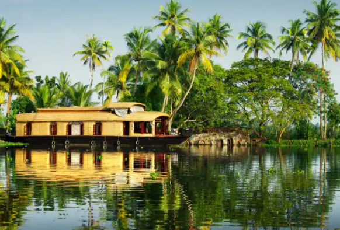

ALLEPPEY- THE VENICE OF INDIA
 
The city was titled the ‘Venice of the East’. The backwaters in the area are perfect for a
houseboat vacation.The houseboats are age-old modes of transportation revamped with a plenitude
of luxuries equivalent to a 5-star hotel. The scenic landscape is a soothing sight.Alappuzha is
also known by its anglicized name Alleppey. Gifted with immense natural beauty, Alappuzha’s backwaters
have been the mainstay of Kerala’s tourism. Alappuzha port used to be one of the busiest trade
centers and traded with the Persian Gulf regions and even Europe. Close to Alappuzha lies Kuttanad,
the ‘Granary of Kerala’, where farming is done below sea level.
WAY TO ALAPPUZHA:-
<--BACK
HOME